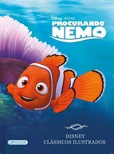
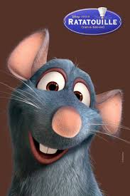
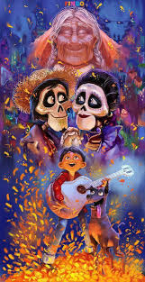

| Filmes da Pixar | Data de lançamento | Gênero | Sobre |
|---|---|---|---|
Monstros S.A  |
(2001) |
Animação/Comédia |
Este filme da Pixar se passa na cidade de Monstrópolis, onde monstros geram energia a partir dos gritos de crianças assustadas. A história segue os monstros Sulley e Mike, que trabalham na Monstros S.A., uma empresa que coleta gritos para abastecer a cidade. Suas vidas mudam quando conhecem uma garotinha humana chamada Boo, que acidentalmente entra no mundo dos monstros. |
Toy Story  |
(1995) |
Animação/Comédia |
Este foi o primeiro longa-metragem da Pixar e é uma história clássica sobre brinquedos ganhando vida quando seus donos não estão por perto |
| Procurando Nemo  |
(2003) |
Animação/Aventura |
Um conto emocionante sobre um peixe-palhaço chamado Marlin em uma jornada para encontrar seu filho, Nemo, que foi capturado por um mergulhador. |
| Ratatouille  |
(2007) |
Animação/Comédia |
A história de um rato chamado Remy que sonha em se tornar um chef em Paris, apesar das expectativas sociais e obstáculos físicos. |
Wall-E 
|
(2008) |
Animação/Ficão Científica |
Um filme ambientado em um futuro distópico, onde a Terra foi abandonada pelos humanos e é limpa por um pequeno robô chamado Wall-E. |
Divertida Mente 
|
(2015) |
Animação/Comédia Dramática |
Uma visão sobre as emoções dentro da mente de uma jovem chamada Riley, personificadas por personagens como Alegria, Tristeza, Raiva, Medo e Nojo. |
| Viva: A vida é uma festa  |
(2017) |
Animação/Comédia Musical |
Um filme ambientado no México durante o Dia dos Mortos, seguindo um garoto chamado Miguel em uma jornada para descobrir a verdade sobre sua família. |

menu